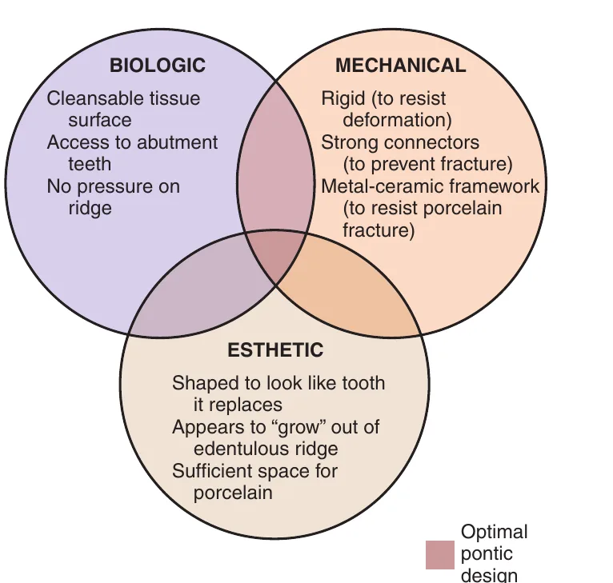

نسخه استخراجشده؛ ترجمه یا تأیید علمی انجام نشده است. وضعیت: captured
دستهبندی بنیادی: «طرحهای پانتیک به دو گروه کلی تقسیم میشوند: آنهایی که با مخاط دهان تماس دارند و آنهایی که ندارند.» و زیرگروهها بر پایهی «شکل سمت لثهای پانتیک» تعریف میشوند. و معیار انتخاب: «عمدتاً زیبایی و بهداشت دهان.»
و قاعدهی ناحیهای: «در ناحیهی قدامی، جایی که ظاهر مهم است، پانتیک باید بهخوبی با بافت آداپت شود تا به نظر برسد از لثه ظهور میکند. در مقابل، در نواحی خلفی — پرمولر و مولر مندیبل — کانتورها میتوانند به سود طرحهایی که کمزیباترند اصلاح شوند.»
و پانتیک بهداشتی (سانیتری): «سطح بافتیاش از ریج باقیمانده فاصله دارد» و همین «کنترل پلاک را با اجازه دادن به عبور نوارهای گاز و سایر وسایل تمیزکننده از زیر پانتیک و حرکت رفتوبرگشتی به شیوهی واکس زدن کفش آسانتر میکند».
و معایبش: «به دام افتادن ذرات غذا، که ممکن است به عادات زبانی آزاردهنده برای بیمار بینجامد.» و محدودیت کاربردش: «کمدندانمانندترین طرح است و بنابراین برای دندانهایی که بهندرت حین عملکرد نمایش داده میشوند — یعنی مولرهای مندیبل — نگه داشته میشود.»
و نسخهی اصلاحشدهاش: «بخش لثهایاش مانند یک طاق میان رتینرها شکل گرفته است.» و سه مزیت این هندسه: «افزایش اندازهی کانکتور، کاهش تنش متمرکز در پانتیک و کانکتورها، و حساسیت کمتر به تکثیر بافتی که وقتی پانتیک بیش از حد به ریج نزدیک است رخ میدهد.»
و پانتیک زینمانند — طرحی که باید کنارش گذاشت: «سطح نشستی مقعر دارد که ریج را باکولینگوالی میپوشاند و کانتورها و پروفایل ظهور دندان از دست رفته را در هر دو سمت شبیهسازی میکند.» ولی: «طرحهای زینمانند یا ریجلپ باید اجتناب شوند، چون سطح لثهای مقعر پانتیک برای تمیز کردن با نخ دندان قابل دسترس نیست، که به تجمع پلاک میانجامد» — و «این نقص طراحی نشان داده شده که به التهاب بافتی میانجامد».
و ریجلپ اصلاحشده — ترکیب بهترینها: «بهترین ویژگیهای طرحهای بهداشتی و زینمانند را ترکیب میکند و زیبایی را با تمیز کردن آسان جمع میکند»: «ریج را از سمت فاسیال میپوشاند — تا ظاهر دندانی که از لثه ظهور میکند به دست آید — ولی از سمت لینگوال از ریج فاصله دارد.»
و شرط بهداشتیاش، با یک قاعدهی هندسی: «برای کنترل بهینهی پلاک، سطح لثهای نباید هیچ فرورفتگی یا گودی داشته باشد؛ بلکه باید تا حد ممکن از مزیال به دیستال محدب باشد — هرچه تحدب بیشتر، بهداشت دهان آسانتر.»
و شکل تماس بافتی: «تماس بافتی باید شبیه حرف T باشد که بازوی عمودیاش در کرست ریج پایان مییابد. آداپتاسیون فاسیال ریج برای ظاهر طبیعی ضروری است.»
و یک تصحیح اصطلاحی: «هرچند این طرح تاریخاً ریجلپ نامیده میشد، اصطلاح ریجلپ اکنون مترادف طرح زینمانند به کار میرود.» و جایگاهش: «رایجترین فرم پانتیک در نواحی قابل رؤیت حین عملکرد — دندانهای قدامی ماگزیلا و مندیبل، پرمولرهای ماگزیلا، و مولرهای اول.»

پانتیک مخروطی — که «تخممرغیشکل، گلولهایشکل یا قلبیشکل» هم نامیده میشود: «برای بیمار سرراست است که تمیز نگه دارد. باید تا حد ممکن محدب ساخته شود و تنها یک نقطهی تماس داشته باشد: در مرکز ریج باقیمانده.» و کاربردش: «برای جایگزینی دندانهای خلفی مندیبل که ظاهر زیبایی نگرانی کمتری است.»
و وابستگی شکلش به ریج: «کانتورهای فاسیال و لینگوال به عرض ریج باقیمانده وابستهاند؛ یک ریج تیغهای، کانتورهای تختتر با ناحیهی تماس بافتی باریک میطلبد.»
و محدودیتش: «این نوع طرح ممکن است برای ریجهای پهن نامناسب باشد، چون پروفایل ظهور مرتبط با نقطهی تماس بافتی کوچک ممکن است نواحی گیر افتادن غذا بسازد.» و جایگزینش: «پانتیک سانیتری یا بهداشتی، طرح انتخابی در چنین موقعیتهای بالینی است.»
و پانتیک اوویت — زیباترین طرح: «سطح بافتی محدبش در فرورفتگی یا گودی بافت نرم ریج قرار میگیرد، که باعث میشود به نظر برسد دندان بهمعنای واقعی از لثه ظهور میکند.»
و پیشنیازهایش: «تکنیکهای حفظ ساکت باید در زمان کشیدن دندان انجام شوند تا فرورفتگی بافتی ساخته شود.» و برای ریج از پیش موجود: «افزایش جراحی بافت نرم معمولاً لازم است»؛ و پس از فراهم شدن حجم کافی، «یک فرورفتگی ساکت با دیاموندهای جراحی، الکتروسرجری یا لیزر دندانی در ریج تراشیده میشود».
و در همهی گزینهها یک شرط مشترک: «توجه دقیق به کانتور پانتیک ترمیم موقت ضروری است وقتی ریجی که پروتز دائمی را دریافت خواهد کرد شرطی و شکلدهی میشود.»
و مزایای مکانیکی و بهداشتی اوویت: «فرم فرورفتهاش مستعد ضربهی غذایی نیست. هندسهی محدب پهنش قویتر از ریجلپ اصلاحشده است، چون پرسلن در گسترهی جینجیوفاسیال پانتیک حمایت میشود. و چون سطح بافتی در همهی ابعاد محدب است، برای نخ دندان قابل دسترس است.»
ولی معایبی هم دارد: «بهداشت دقیق دهان برای پیشگیری از التهاب بافتی ناشی از ناحیهی بزرگ تماس بافتی ضروری است»؛ «نیاز به مدیریت جراحی بافت و هزینهی مرتبط»؛ و «یک جلسهی ارزیابی افزوده معمولاً برای دستیابی به نتیجهی زیبایی لازم است».
و یک مسئلهی فنی ظریف در قالبگیری: «فرورفتگی ساکت با شبهپاپیلاهایش، به حمایت پانتیک اوویت موقت نیاز دارد و وقتی ترمیم موقت پیش از قالبگیری برداشته شود فرومیریزد.» و راه جبرانش: «برای جبران این تغییر سهبعدی ساکت حین قالبگیری، لازم است کست در این ناحیه تراشیده شود تا تماس مثبت و حمایت شبهپاپیلاها با پانتیک دائمی تضمین گردد»؛ راه دیگر، استفاده از تکنیکهای قالبگیری ویژه است. و چون این تنظیمها «تا حدی دلبخواهی» انجام میشوند، «ممکن است لازم شود در فاز ارزیابی بازنگریهایی روی سطح بافتی پانتیک — شکلدهی دوباره یا افزودن پرسلن — انجام شود».
و اوویت اصلاحشده: «فرمی اوویت با آپکس قرارگرفته فاسیالیتر روی ریج، بهجای کرست ریج. این تغییر، استفاده از پانتیک را در سناریوهایی که عرض افقی ریج برای اوویت متعارف کافی نیست ممکن میکند.» و ادعایی دربارهاش: «تمیز کردن این پانتیک، آسانترین در میان همهی انواع پانتیک دانسته شده است.»